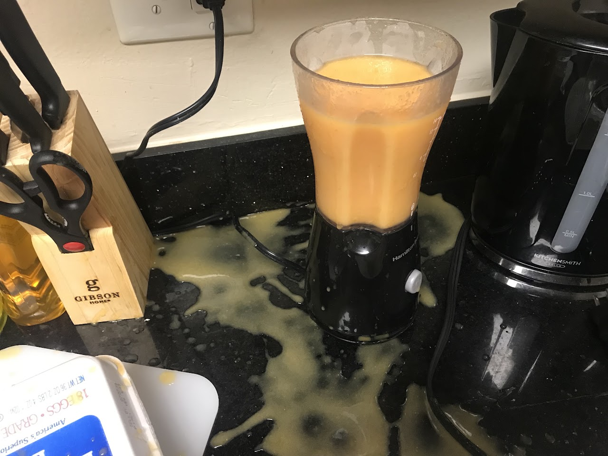

Live → Blog
August 9, 2019

About two months ago, I embarked on this journey. Now I can say being a house husband is not as glamorous as it seems. Nobody tells you that milk will go bad, or that not all trash bags will fit in your trash can, and that if you leave dishes at the sink they will still be waiting for you when you return exhausted from work in the evening. But is it really not glamorous? On second thought, I think being a house husband is heaven for someone with a degree in Management Science and Engineering. The problem of food going bad is an opportunity to optimize my inventory management. Trash bags not fitting into the trash can demonstrates that I need better requirements mapping, and the unwashed dishes at the end of the day means I need to design a new Process Flow for my work in the kitchen. Who knew all the mathematical models I learned at the Stanford School of Engineering would someday come in handy in the kitchen?
Every week I jot down a list of groceries that I need to buy in my planner. To restock, I either stop by Trader Joe's on my way from school on a weekday or take the bus down to the San Antonio shopping center so I can buy from Safeway. In my opinion, Trader Joe's is good for fruits and vegetables, and Safeway is good for meats and juices. For items such as these, I do not have a problem managing the inventory. I usually buy enough meat, fruits, and vegetables to last a week. The problem comes with grocery items that last beyond a week. With these, there are two kinds of problems. The first is with items like milk and bread, that are sold in larger quantities than I would like and I therefore am unable to finish before their pot life expire. I am left wondering whether to eliminate those from my diet entirely, or continue to waste them every cycle. I cannot eliminate them from my diet because I need bread and milk, but I also cannot keep throwing them away because I am trying to minimize my negative impact on the environment. So this is a problem I must find a solution to and soon. Why do Americans not produce things in smaller sizes? The second kind of problem is with non-perishable household items that take a long time to replace, such as air freshener and disinfectant cleaner. They always run out at inconvenient times. This one is an easy problem, I can make sure I always have backup inventory of the essential non-perishable household items. The cost to hold that extra inventory is negligible, I assume.
Running a household, even of one as in my case, is a full time job. You have to make sure that there are essential resources such as toilet paper, trash bags, and pot scourers. It is a full time job not because you have to do the inventory management of these items, but because you have to do requirements mapping of these items. You have to decide whether single ply or 2 ply toilet paper serves your needs better; figure out if the trash bags are the right size for your trash can; and get the soft pot scourers that are perfect substitutes for steel wool because you do not want to expose yourself to the long term health effects of steel wool. The saddest challenge I have faced in this field was discovering that the laundry machines at my apartment did not have a receptacle for fabric softener. So I now have to adjust to this by using laundry detergent that has fabric softener inside. It is not the same thing, but what can I do? One has to adjust to changing contexts.
Lastly, I am still disappointed that I have not found an optimal process flow for my adventures in the kitchen. The biggest failure is I always fail to do the dishes before I leave for school. Which means I almost always do them in the evenings right before I cook. For now this system works because I am still by myself, but even then it is suboptimal because I spend a good chunk of my day feeling bad about the dirty dishes I left in the sink. One approach would be to do the dishes for the day before I head to bed. But I always wait for the dishes from the morning so I can apply the demand-pulling technique to minimize the amount of water I use to wash dishes. The problem is the morning has problems of its own and there is usually not enough time to do the dishes. The debate now is which of my values matter more: is it minimizing my negative impact on the environment by using demand-pulling and washing the dishes once a day OR is it maintaining a clean house by washing dishes after every meal? These are some of life's big questions. For the next iteration of attempting to solve this, I am going to continue demand-pulling the dishes but washing them in the evening after dinner instead of in the morning. The dirty dishes from breakfast would not harm my cleanliness objective significantly.
I am excited to see how the rest of this journey unfolds. I am especially excited to apply some of my Engineering training to the very important problems of house keeping. With all the breakthroughs in Cloud Computing and the increasing feasibility of Internet-of-things technologies, now is an especially great time to be a house husband and a house wife. Maybe these frustrations will result in me creating a technology powered household inventory management system to help fellow house husbands and house wives run their homes more effectively and efficiently. That way we can spend more time being soccer moms and soccer dads, or getting haircuts and massages.
← Return to Blog